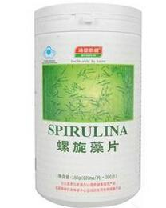
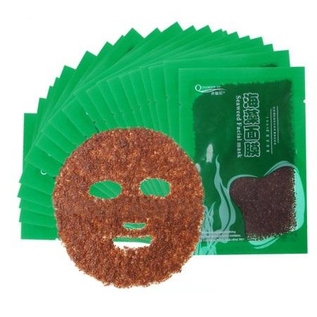
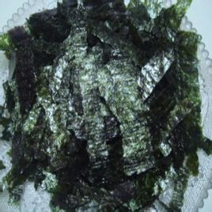

产品
|  | 螺旋藻片以100%自然生长钝顶螺旋藻为原料，经提纯后直接压片制成的保健食品，百分百纯天然。 针对免疫力差的人群，增强抵抗力，调节身体机能。用于气血亏虚，痰浊内蕴，面色萎黄，头晕头昏，四肢倦怠，食欲不振；病后体虚，贫血，营养不良属上述证候者。 |
 |
海藻面膜以海藻提取物的矿物质成份做，控油清洁毛孔，提供充足的水分，镇静疲劳、粗糙的皮肤，使皮肤维持细腻、有光泽。海藻是生长在海滩浅水水域的一种海洋植物，具有海藻胶，还含多种生命活性物质，如多糖、高不饱和脂肪酸，牛磺酸、类胡萝卜素、甾淳及海带氨酸等。纯天然植物海藻，是一种多功能有效美容面膜，经过中，美，日高科技医学研究中心发明，它含有蛋白素，维他命E，能对面部皮肤起到去皱，去斑，美白，消炎，消除眼部眼袋皱纹，增加营养水分的作用，使肌肤更有弹性和青春力。 |
 |
海苔紫菜烤熟之后质地脆嫩，入口即化，特别是经过调味处理之后，更加美味。海苔浓缩了紫菜当中的各种B族维生素，特别是核黄素和尼克酸的含量十分丰富，还有不少维生素A和维生素E，以及少量的维生素C。海苔中含有15%左右的矿物质，其中有维持正常生理功能所必需的钾、钙、镁、磷、铁、锌、铜、锰等，其中含硒和碘尤其丰富，这些矿物质可以帮助人体维持机体的酸碱平衡，有利于儿童的生长发育，对老年人延缓衰老也有帮助。 |